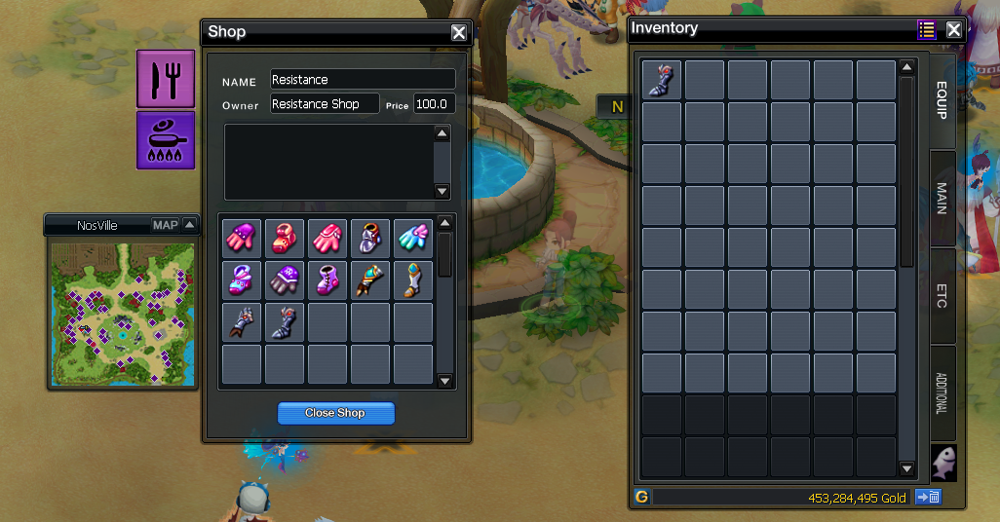

<div class="d-flex justify-content-center">
    <section class="starter-guide">
      <h1 class="starter-guide-title-1">Starter Guide</h1>
  
      <div class="w-75">
          <p class="starter-guide-text">
            If You have just downloaded the game or You still are downloading it and want to have a good start, this guide is for You! The first thing You should do is register on the  <a href="https://nosvoid.com/register/" target="_blank">website</a> :
          </p>
          <h2 class="starter-guide-title-2">PIN Code</h2>
          <p class="starter-guide-text">
            After that, You should log in on the website and set up Your PIN code.
            <br>
            Your PIN code is composed by 9 numbers,  don't forget it! We will need it soon... To set up Your PIN code just log in, and the pop-up will show up. Be aware, it might not let You to make this code too easy!
          </p>
          <h2 class="starter-guide-title-2">Making your first character</h2>
          <p class="starter-guide-text">
            When Your account is ready You can open the game by opening the NosVoid.exe and log into the game with the account You created. It's time to make Your first character. Simply create it as You do in normal NosTale. When You try to enter the game with Your new character, this is the time to write Your PIN  code. You have to enter it from time to time. After finally getting into the game, You will appear on this map : 
          </p>
          
          <h2 class="starter-guide-title-2">First Map</h2>
          <p class="starter-guide-text">
            Here You can craft Yourself one pet and one partner. Choose wisely! <br>
            But don't be worried about the choice, they do have very similar stats, but keep in mind, for now there is no way to get back to this area, so You should choose now. After(or before) You have crafted Your partners for the adventure, You can change Your class to either: Mage, Archer ; Warrior or Martial Artist ,to do that, You need to unequip Your current items You received, and talk to the NPC in the middle of the room and choosing the dialogue "Job Change
          </p>
          <h2 class="starter-guide-title-2">NosVille</h2>
          <p class="starter-guide-text">
            After choosing the class, You can leave the room by entering the portal. <br>
            You will be teleported to the main town. It's NosVille, You can get there anytime by using one of the commands: $home all of them are listed in players command channel. But for now, let's take a short trip to the useful NPCs for the early game. You got some gold from the game and don't be worried to spend it, since You will soon start earning a lot more! Firstly, we should visit Starter Pack NPC:
          </p>
          
          <p class="starter-guide-text">
            You can also notice, that we received a medal for the reputation. You can use it freely. In here we can buy better equipment. The first SP card, fairies. Arrows if needed , but don't buy too many yet! We have some shopping to do and its quite expensive for now. I would recommend You buying some Seed of Power though, they might come in handy in some situations, 200 should be more than enough. But wait... We've crafted our partners and they're not here. Let's fix it by going here:
          </p>
          
          <p class="starter-guide-text">
            This is the portal to the Miniland Both NPCs sell useful stuff for the pets, but We don't need any of that for now. Just enter the portal, use  items You crafted on the first map(They should be in the "Equip" tab) and You can make them follow You by using the "Company" button, after targetting them. Now let's continue our shopping trip and let's go to the Resistance shop:
          </p>
          
          <p class="starter-guide-text">
            We can't wear them now, but the levels are going to rain soon, so it will sustain our survivabilty while the levels go on, it will be nice to already have them in our inventory, they might chunk our savings, but don't be worried about that. I don't know how about You, but this is the time for me to get already annoyed with how much I can walk "by foot" in this game. Let's get ourselves a nice Mount to speed things up! Mount shop:
          </p>
          
          <p class="starter-guide-text">
            I recommend you buying one for now, You will be able to change it later on. You can set it on Your skill bar by going to Main in Your inventory and just moving it there. There are some bonuses we can still acquire. Let's go to the Costume Shop:
          </p>
          
          
          <p class="starter-guide-text">
            There are two shops for costumes. Keep in mind that the bonuses may differ between the costumes. Choose Yours and let's move to the Map portals:
          </p>
          
          <p class="starter-guide-text">
            As you can see there are two portals. For now it is better to visit Lvl Area since we want to have better equipment:
          </p>
          
      </div>
    </section>
</div>